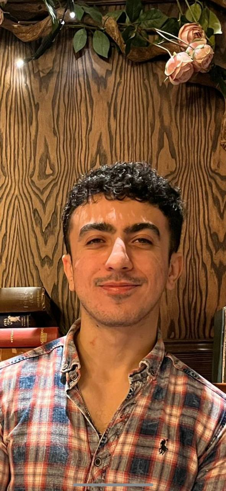

NeurIPS 2026
Spotlight · top 3%
Parsa Esmati
PhD candidate in machine learning·University of Bristol
Hi, I'm Parsa! I'm a doctoral researcher in the Machine Learning and Computer Vision group at the University of Bristol, advised by Prof. Majid Mirmehdi, where I work on the representation geometry of visual generative models and on efficient latent representations that accelerate diffusion models.
I’m broadly interested in representation learning, especially in what a general, reusable representation of the world might look like if learned entirely from raw visual input. I’m also curious how much of the world’s underlying structure, from geometry to the laws of physics, a model can discover simply by learning to generate what it sees.
I’m always happy to collaborate. If anything here looks interesting, please reach out.
Research interests

News
-
September 2026
The Invisible Hand of Physics has been accepted to NeurIPS 2026 as a Spotlight (top 3% of submissions). We show that video diffusion models encode physical plausibility inside the denoising transformer, even though it is not reflected in what they render. Joint work with Microsoft Research, Mila, McGill and Calgary. NeurIPS 2026 Spotlight
-
September 2026
Probability-Conserving Flow Guidance has been accepted to NeurIPS 2026. We introduce Adaptive Manifold Guidance (AdaMaG), a plug-and-play replacement for classifier-free guidance that keeps samples on the learned manifold under strong guidance. Joint work with KAIST. NeurIPS 2026
-
April 2025
I'll be joining Microsoft Research as a Research Intern with the Game Intelligence group for Summer 2025, working on video world models.
-
April 2025
Our paper on source-free video domain adaptation, Co-STAR: Collaborative Curriculum Self-Training with Adaptive Regularization, is now available on arXiv.
-
October 2024
SEA: State-Exchange Attention has been accepted at NeurIPS 2024. It reduces the temporal rollout error in long-sequence generation of PDE solutions. NeurIPS 2024
Publications
Service
-
ReviewerNeurIPSConference on Neural Information Processing Systems2025
-
ReviewerICMLInternational Conference on Machine Learning2026
-
ReviewerICLRInternational Conference on Learning Representations20262027